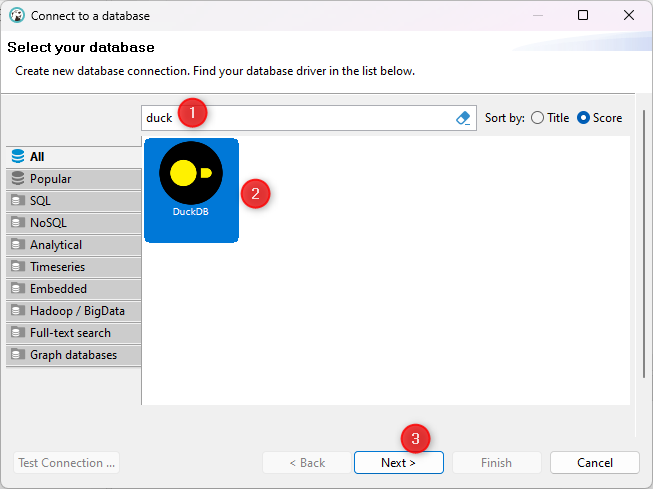
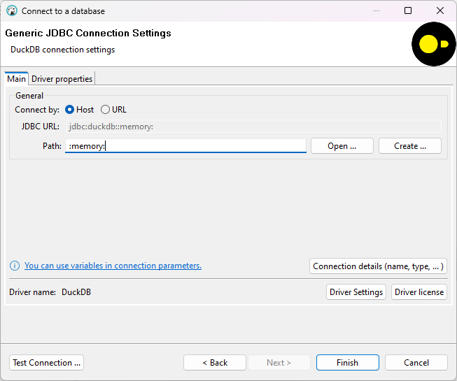
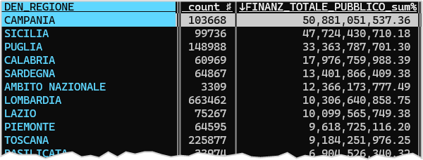

| Ciclo | Totale finanziamento pubblico (€) |
|---|---|
| Ciclo di programmazione 2000-2006 | 17.667.666.307,18 |
| Ciclo di programmazione 2007-2013 | 101.629.942.347,96 |
| Ciclo di programmazione 2014-2020 | 154.061.098.680,89 |
| Ciclo di programmazione 2021-2027 | 7.465.189.173,71 |
Introduzione
In questa piccola guida, ti porteremo per mano alla scoperta del formato Parquet e ti spiegheremo cos’è. Potresti preferirlo al buon vecchio formato CSV, visto che può rendere la tua vita con i dati un po’ più facile e molto più veloce.
È un formato di archiviazione ottimizzato per lavorare con dati complessi e voluminosi. A differenza del CSV - che memorizza i dati per riga - Parquet organizza i dati per colonne.
Immagina di avere una tabella con le 4 colonne ID, Nome, Età, E-mail. Come differisce l’accesso ai dati tra un file CSV e un file Parquet?
In un file CSV, se vuoi accedere soltanto alla colonna Età per tutte le righe, il sistema deve leggere l’intero file, riga per riga, per estrarre l’informazione relativa.
Questo processo può essere piuttosto inefficiente, soprattutto con grandi volumi di dati, perché comporta la lettura di molti dati inutili (quelli delle colonne ID, Nome e E-mail).
tabella.csv
ID,Nome,Età,E-mail
1,Mario Rossi,30,mario.rossi@email.com
2,Laura Bianchi,25,laura.bianchi@email.com
...Viceversa ad un file Parquet, essendo organizzato per colonne, si può accedere direttamente, e anche esclusivamente, alla colonna Età, senza dover leggere anche le altre colonne.
Qui sotto un esempio, in si vede per accedere alla colonna Età, si possono saltare tutte le altre e leggere soltanto quella.
tabella.parquet
ID: 1,2,...
Nome: Mario Rossi,Laura Bianchi,...
Età: 30,25,...
E-mail: mario.rossi@email.com,laura.bianchi@email.com,...Questo rende l’accesso ai dati molto più veloce ed efficiente.
L’esempio di OpenCoesione
OpenCoesione è un progetto nazionale il cui obiettivo è promuovere trasparenza, collaborazione e partecipazione riguardo alle politiche di coesione nel paese.
È da sempre uno dei progetti di riferimento per l’apertura dei dati in Italia, che ha fatto sempre scuola.
E lo ha fatto ancora una volta: dal 21 febbraio 2024 ha iniziato a pubblicare la propria banca dati anche in formato Parquet.
Ed è probabilmente il primo progetto italiano di una Pubblica Amministrazione a farlo, e sicuramente il primo con una banca dati di questa ricchezza e dimensione.
➡️ Stiamo parlando del catalogo dei Progetti con tracciato esteso, disponibile qui, anche in formato Parquet: https://opencoesione.gov.it/it/opendata/#!progetti_section
Abbiamo sottolineato come il formato Parquet sia molto più efficiente per l’accesso e l’analisi dei dati, rispetto al CSV.
Questa caratteristica è molto evidente, soprattutto per tabelle molto grandi, come questa dei progetti di OpenCoesione, composta da circa 2.000.000 di righe x 200 colonne.
È possibile ad esempio interrogarla, per avere restituito il totale di finanziamento pubblico per ogni ciclo di finanziamento (vedi Tabella 1), e avere la risposta in 0,07 secondi.
E questa rapidità si ottiene sul proprio computer di lavoro, senza che sia necessario mettere in campo risorse di calcolo particolarmente potenti e dispendiose sul cloud.
O senza che sia necessario importare il file in un database relazionale, con tutte le operazioni di trasformazione e pulizia dei dati che questo comporta evitando anche l’installazione e la configurazione di un db relazionale.
Come leggere un file Parquet
Se non hai mai sentito parlare di questo formato, probabilmente penserai che per te sia impossibile usarlo per leggere, filtrare, analizzare, ecc. i dati di OpenCoesione. Penserai che è un formato solo per “tecnici”.
Niente di più sbagliato! Leggere un file Parquet è facile e veloce, e paradossalmente è più necessario l’aiuto di un tecnico per leggere un file CSV di 4,5 Gigabyte (come quello dei progetti di OpenCoesione). Per la gran parte degli utenti è infatti impossibile leggere un file di queste dimensioni, anche con un buon Personal Computer.
E non pensare di utilizzare programmi come Excel, hanno un limite di circa 1.000.000 di righe per foglio di lavoro (tante ma non sufficienti nel nostro caso in cui ne abbiamo circa 2.000.000).
Nota bene
Un file di queste dimensioni, aldilà del formato, deve essere gestito con attenzione e con un minimo di competenza.
Al doppio click
Per visualizzare un file Parquet con un semplice doppio click, puoi usare Tad, un visualizzatore di file Parquet (e anche CSV, SQLite e DuckDB) open source, gratuito e disponibile per Windows, Mac e Linux.
Una volta installato, basterà fare doppio click sul file per aprirlo e visualizzarne il contenuto (vedi Figura 1). Questo di OpenCoesione è un file grande e sarà necessario qualche secondo.
{kind=link}
Tra le funzionalità di Tad c’è anche la possibilità di filtrare i dati. Nell’immagine di sopra:
- il filtro applicato;
- il modulo per costruire il filtro;
- il mini report sul numero di righe filtrate.
Con un client visuale SQL
SQL è uno dei linguaggi più diffusi e standard per l’interrogazione e la manipolazione dei dati. È nato 50 anni fa, quindi c’è un gran numero di libri, tutorial, corsi, forum, cheatsheet, ecc. per imparare a usarlo, e ci sono centinaia di applicazioni, librerie, framework, dedicati.
Un file Parquet è interrogabile con SQL, quindi tutti possono usarlo per interrogare e analizzare i dati in questo formato.
Un’applicazione SQL “visuale”, open source e multi-piattaforma, che puoi usare per interrogare un file Parquet è DBeaver. Questi i passi che dovrai seguire per interrogare un file Parquet con DBeaver:
- scaricarla e installarla (https://dbeaver.io/download/);
- lanciarla, aprire il menu
Databasee selezionareNew Database Connection; - cercare
DuckDB, selezionarlo e fare click suNext;

- impostare
:memory:comePath;

- fare click su
Test Connection, che verificherà la necessità di installare eventuali componenti mancanti. Se manca qualcosa, installarla facendo click suDownload.
A questo punto, nel riquadro di sinistra “Database Navigator” dovrebbe apparire una connessione al database DuckDB memory.
{kind=link}
Per lanciare una query non ti resta che fare click con il pulsante destro del mouse su memory, selezionare SQL Editor, poi New SQL script e scrivere la tua prima query, per leggere ad esempio le prime 5 righe del file Parquet:
SELECT *
1FROM "c:\tmp\progetti_esteso_20230831.parquet"
LIMIT 5- 1
- Per puntare al file, è stato inserito il percorso del file Parquet.
{kind=link}
La query di esempio di sopra, con i dati per ciclo di finanziamento di Tabella 1, è invece il risultato di questa query, che puoi provare a lanciare in DBeaver:
SELECT oc_descr_ciclo Ciclo, SUM(finanz_totale_pubblico) "Totale finanziamento pubblico (€)"
FROM "C\tmp\progetti_esteso_20230831.parquet"
GROUP BY oc_descr_ciclo
ORDER BY ciclo;A riga di comando con DuckDB
Se preferisci lavorare da riga di comando, puoi usare lo straordinario DuckDB, un sistema di gestione di database relazionali (RDBMS), che supporta il formato Parquet.
Per installarlo, puoi seguire le istruzioni disponibili qui: https://duckdb.org/docs/installation.
Per usarlo non ti resta che lanciare il comando duckdb e scrivere la tua prima query.
Potrebbe essere diversa dalle precedenti, come quella comodissima per avere un riepilogo rapido dei dati, basata sul comando SUMMARIZE di DuckDB: restituisce per ogni campo, il tipo di campo e una ricca serie di calcoli, il numero di valori distinti, la percentuali di valori nulli, il minimo, il massimo, la media, ecc..
Qui sotto la sintassi della query e un esempio di output in Figura 6.
SUMMARIZE select * from 'progetti_esteso_20231231.parquet';{kind=link}
SUMMARIZE
È un comando di grande comodità, che si può usare ad esempio per sapere quali sono le colonne che hanno meno del 10% di valori nulli:
SELECT * FROM (summarize select * from 'progetti_esteso_20231231.parquet')
WHERE
null_percentage <10;Sono 86 colonne su circa 200 e si potrebbe scegliere di concentrarsi su questo campione più ristretto e velocizzare ulteriormente le operazioni.
E sempre da SUMMARIZE ci si può fare un’idea delle colonne più “datose”, ovvero quelle con meno valori distinti, che sono spesso quelle più interessanti per fare analisi e visualizzazioni, perché consentono di definire categorie (le regioni, il settore, la natura, ecc.).
SELECT * FROM (summarize select * from 'progetti_esteso_20231231.parquet')
WHERE
approx_unique <30;
Nota
SUMMARIZE restituisce in realtà un valore approssimativo, ma molto vicino al reale, dei valori distinti. Questo per ottimizzare i tempi di esecuzione.
A riga di comando con VisiData
VisiData è “il coltellino svizzero per i dati, che probabilmente non conosci”. E proprio con il formato Parquet se ne ha un’idea.
Basta scrivere vd nome_file.parquet e premere INVIO, per aprire il file e iniziare a esplorarlo, filtrarlo, analizzarlo, ecc..
Con il file di OpenCoesione ci mette qualche secondo, perché è un file grande, ma poi si può iniziare a esplorarlo e ad esempio avere restituito il totale di finanziamento pubblico per regione.

Accesso tramite Python
La Tabella 1 è generata proprio a partire da codice Python, che legge il file Parquet dei progetti di OpenCoesione e ne estrae una sintesi.
Un modo comodissimo per farlo è usare la libreria duckdb e il suo metodo query, che permette di eseguire una query SQL e trasformare il risultato in un DataFrame di pandas.
# importa modulo duckdb
import duckdb
# definisci la query
query= """
SELECT oc_descr_ciclo Ciclo, SUM(finanz_totale_pubblico) "Totale finanziamento pubblico (€)"
FROM 'progetti_esteso_20231231.parquet'
GROUP BY oc_descr_ciclo
ORDER BY ciclo;
"""
# esegui la query e trasforma il risultato in un DataFrame
riepilogo_finanziamento=duckdb.query(query).df()Ti consigliamo di approfondire nella documentazione ufficiale dedicata.
Accesso Observable
L’ultima modalità di accesso che ti proponiamo è tramite Observable, una delle più importanti e belle piattaforme/framework per la visualizzazione e l’analisi dei dati.
È un esempio a nostro avviso significativo, perché mostra come il Parquet sia un formato pronto all’uso per una grandissima varietà di ambienti, linguaggi e strumenti.
Il linguaggio di programmazione di Observable è JavaScript. La prima cosa da fare è caricare il file Parquet, che può essere fatto con la libreria duckdb.
db = DuckDBClient.of({
progetti: FileAttachment("progetti_esteso_20231231.parquet")
})
Nota
Nella versione di Observable gratuita e online, il limite delle dimensioni di un file è di 50 MB. Ma utilizzando Observable Framework o con Quarto, le dimensioni dei file non sono un problema.
In ogni caso, è bene evitare di fare caricare nel DOM della pagina web array di dati molto grandi.
Poi ad esempio si può interrogare il file, ancora una volta con una query SQL, per avere ad esempio il conteggio dei progetti, per stato del progetto:
viewof tbl_stato_proggetti = {
const data = await db.query(`SELECT
OC_STATO_PROGETTO AS "Stato Progetto", count(*) Conteggio FROM progetti
GROUP BY OC_STATO_PROGETTO
ORDER BY Conteggio DESC`)
return Inputs.table(data, {height: 200, layout: "auto",locale: "it-IT"})
}In output:
E visto che siamo in un ambiente specializzato per la visualizzazione e l’analisi dei dati, si può anche visualizzare il risultato con un grafico a barre.
viewof graficoStatoProgetti = {
const data = await db.query(`SELECT
OC_STATO_PROGETTO AS "Stato Progetto", count(*) AS Conteggio FROM progetti
GROUP BY OC_STATO_PROGETTO
ORDER BY Conteggio DESC`);
// Definisci una funzione di formattazione per il locale "it-IT"
const formatter = new Intl.NumberFormat("it-IT").format;
// Crea il grafico a barre utilizzando Plot con formattazione personalizzata
return Plot.plot({
marks: [
Plot.barY(data, {x: "Stato Progetto", y: "Conteggio", fill: "Stato Progetto"}),
],
width: 600,
height: 400,
marginLeft: 50,
color: {
legend: true
},
x: {
label: "Stato Progetto"
},
y: {
label: "Conteggio",
// Usa la funzione di formattazione per le etichette dell'asse Y
tickFormat: formatter
},
style: {
overflow: "visible"
}
});
}In output:
Note finali
Abbiamo scritto questo post, perché crediamo che il formato Parquet sia un’opportunità per molte persone di migliorare la propria esperienza con i dati. E non solo per chi è “esperto”, ma anche per chi ha delle competenze di base con SQL. Perché come è evidente le modalità di accesso sono molteplici e adatte a diversi livelli di competenza.
Il fatto che OpenCoesione sia stato il primo progetto a scegliere di pubblicare i propri dati in formato Parquet è un segnale molto importante: siamo confidenti che possa essere seguito presto da altre amministrazioni e organizzazioni.
Non avremmo mai immaginato che la scrittura di questo altro post avrebbe contribuito a generare questa bella conseguenza. E per questo gli autori del post e tutta l’associazione onData ringraziano OpenCoesione e il suo staff per essere stati prima in ascolto e poi protagonisti di questa scelta.